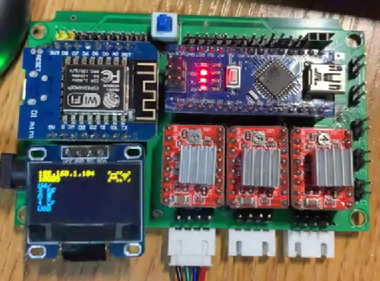

本科阶段学习的课程有：
C++程序开发
Python程序开发
计算机网络
数据结构
计算机组成原理
操作系统
研究生学过的相关课程包括：
软件工程
获奖情况
研究生阶段
国家奖学金 研究生阶段 2021年10月
上海交通大学 研究生一等奖学金
ICP全国大学生算法设计与编程挑战赛 铜奖 2020年 11月
本科阶段
国家奖学金 本科阶段 2017年 10月
华中科技大学 校三好学生奖学金
华中科技大学 科创奖学金
全国大学生电子设计大赛国赛 湖北一等奖 2019年 8月
中国高校智能机器人创意大赛 全国一等奖 2019年 5月
全国大学生电子设计大赛省赛 湖北特等奖 2018年 8月
论文情况
https://www.scopus.com/authid/detail.uri?authorId=57223429533
Pixel level segmentation of early-stage in-bag rice root for its architecture analysis
2021/10/06
Computers & Electronics in Agriculture
根系结构参数对研究植物生长状态非常重要，植物根系的分割是测量这些参数的关键。现有的方法大多使用不同算法计算的阈值来分割灰度图像中的根系，这需要低噪声背景。我们设计了一套自动设备来记录种植在透明袋中的水稻幼苗的根部图像。这些根部图像含有很强的噪声，它使现有的方法在我们的情况下失效了。为了解决强噪声下的水稻根系分割问题，我们提出了一个基于U-Net和SE-ResNet的卷积神经网络。根部图像经过预处理并裁剪成小块，以适应CNN的输入要求。实验表明，我们的方法在对包含微小侧根的水稻苗根部进行像素级分割时表现有效。我们的方法实现了87.4%的交集大于联合（IoU）。该方法为自动和快速的像素级根部分割提供了一种新的方法，这对根部形态学的分析具有重要意义。
Panicle-3D: Efficient Phenotyping Tool for Precise Semantic Segmentation of Rice Panicle Point Cloud
2021/12/21
Plant Phenomics
二作（导师一作）
提出了穗型分析的自动化装置设计方法和穗型点云语义分析的专用网络。针对穗型研究缺乏自动化仪器问题，该研究首先设计了基于主动结构光的桌面级三维点云扫描装置，对水稻点云数据进行采集，经过数据预处理和标注，得到包含200个水稻点云的数据集。同时，除了对稻穗进行原位扫描外，该装置也支持对稻穗等作物器官进行破坏性分解研究，从而获得稻穗的更为细节的表型参数，例如茎的直径、茎的长度、穗的长度、高度和宽度，主穗和小穗的几何特征，以及幼苗在穗中的分布等。针对传统机器学习方法难以分割的植物点云，引入3D点云卷积神经网络架构，并基于该架构设计了多尺度点云特征分析算法Panicle-3D，实现了快速有效的点云分割。稻穗点云分割准确率达到93.4%，IoU达到86.1%，均优于经典点云处理模型PointNet。与传统的表型参数测量方法相比，该研究提出的方法有助于实现作物表型参数的自动化，为功能遗传分析和育种提供支持。
Automated High-Resolution Structure Analysis of Plant Root with a Morphological Image Filtering Algorithm
水稻根系的研究需要在图像处理过程中自动分析根系结构。对于数字滤波器来说，从模糊和杂乱的背景中识别根源是一个挑战。最初的Frangi算法由Alejandro F.Frangi于1998年提出，是一种成功的低通滤波器，专门用于血管图像增强。考虑到血管与根的相似性，采用Frangi滤波算法对根进行轮廓提取。然而，原来的Frangi只增强了管状初生根，但在过滤过程中清除了侧根。本文提出了一种针对植物根系的改进Frangi滤波算法（IFFA）。首先，采用多级图像阈值、连通分量标记和宽度校正对输出的二值图像进行优化。为了增强局部结构，将原Frangi中的高斯滤波算子替换为截断的高斯核，从而得到更清晰的侧根。与原来的Frangi滤波器和商业软件相比，IFFA速度更快、精度更高，像素精度达到97.48%。IFFA是一种有效的增强水稻根系的方法，可用于分割和进一步的生物学研究。IFFA可以适用于不同的二维植物根系。
Design of Multifunctional Seedbed Planting Robot Based on MobileNetV2-SSD
农业机器人作为新一代智能农业机械，已成为农业装备技术的研究热点。深度学习和物联网技术正逐步应用于农业机器人，以优化生产流程，提高生产效率。目前，农业机器人的大部分执行系统和传感器都安装在移动平台上。这种布置使得机器人的功能相对单一，制造成本高，难以推广。对于大型生产设施，目前缺乏模块化、智能化和网络化的机器人生产设备。针对这一问题，本文设计了一种模块化的数控苗床种植管理机器人。对于大型生产设施，目前缺乏模块化、智能化和网络化的机器人。针对这一问题，本文设计了一种结构类似龙门铣床的苗床种植管理机器人。该机器人实现了播种、灌溉、除草、补光等多种基本功能，并基于嵌入式系统实现了物联网和自主操作功能。该机器人实现了播种、灌溉、除草、补光等基本功能，并基于嵌入式系统实现了物联网和自主操作功能。在杂草识别算法方面，通过应用MobileNetV2 SSD网络和颜色阈值分割算法，机器人杂草识别的准确率达到94%。证明了该机器人作为大型农业生产设施生产单元的有效性，并给出了开源设计方案。
基于结构光和自动转台的桌面式3D点云扫描仪
针对实验室复杂表型厘米尺度零件以及植物表型参数分析的需求,开发了桌面式点云扫描方案.设计包括:基于数字光处理(DLP),旋转平台,USB相机设计的自动化多视角扫描平台;基于PCL和OpenCV开发的点云拼接软件.实现了点云自动扫描和拼接.单次扫描时间45 s,物体旋转1周点云扫描次数可任意选择,点云的测量误差小于0.2 mm,点云的配准误差小于0.2 mm.该桌面扫描仪扫描速度快,成本低,精度较好,适用于复杂表型,异形零件的3D测量.
实习经历
华为技术有限公司 智能车bu 智能车控产品部
C/C++软件开发 {2022年 6月 -- 2022年 8月}
1. 用C++/QT开发电机监控软件界面，监控多个电机运行状态和各项技术参数；开发上位机和MCU的USB 串口通讯协议，使用结构体传递电机状态参数。
2. 使用C语言开发PSO粒子群算法，辨识电机特征参数。并根据热力学模型开发C代码，利用辨识得到的参数，离线估计电机温度和电压转矩等运行参数。
Intel 数据中心事业部
2021年11月 -- 2022年 3月
python 爬虫软件开发
使用 python 开发爬虫软件，获取数据中心实例信息。
1. 使用 python 开发爬虫软件，获取数据中心实例信息，并开发字符串预处理和后处理Python库，实现实例规格信息的格式化输出;
2. 基于Redis 和 Flask 开发 Python web服务器，实现各大云服务提供商数据的页面在线阅读，使用 crontab 实现每周定时更新，并生成差异报表。
节卡机器人科技有限公司 机器人技术预研部
2021年\; 6月 -- 2021年 10月 经理: 邵
机器人智能算法预研实习生
1. 机器人算法预研实习生, 项目视频 https://www.bilibili.com/video/BV1UY41137MG
2. 复现CVPR2020 深度学习论文，并开发Python机器人抓取软件平台，实现对任意目标的稳定抓取；
3. 开发基于C++的Web服务器，实现深度学习抓取位姿远程推理功能(本地采集图像，远程推理)；
4. 开发科大讯飞语音识别功能，建立JAKA机器人的人机交互语音识别能力。
项目经历
蔬果采摘机器人
大型设施农业场景下，实现果实自动化识别、判熟、采摘、运输

演示视频, https://www.bilibili.com/video/BV1u341157xN
1. 基于ROS开发机器人控制逻辑，包括视觉子系统、机械臂控制子系统、底盘控制子系统；
2. 使用Python和RGBD相机开发yolov4番茄果实位置识别程序，和颜色空间果实成熟度评估程序；
3. 基于C++和 QT5开发机器人状态监控和运动控制UI程序，实现机器人在线状态监测和运动控制；
4. 开发机器人底盘的运动控制程序，包括modbus通讯和电机PID控制程序
三轴雕刻机嵌入式软件开发
基于WiFi芯片和单片机开发，无线G代码解释器，实现对三轴雕刻机的控制
演示视频，https://www.bilibili.com/video/BV1fz4y1z7iT
1. 二次开发C++ GRBL开源G代码解释器，添加开关控制和LED控制功能。
2. C++开发虚拟串口程序，使用TCP网络端口映射虚拟串口，实现串口网络透传。
3. QT开发G代码生成的上位机，实现TCP虚拟串口的连接功能和G代码生成功能。
